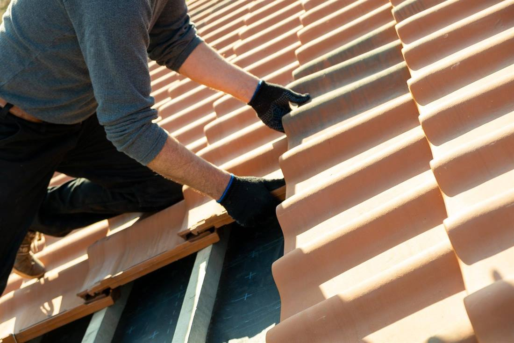
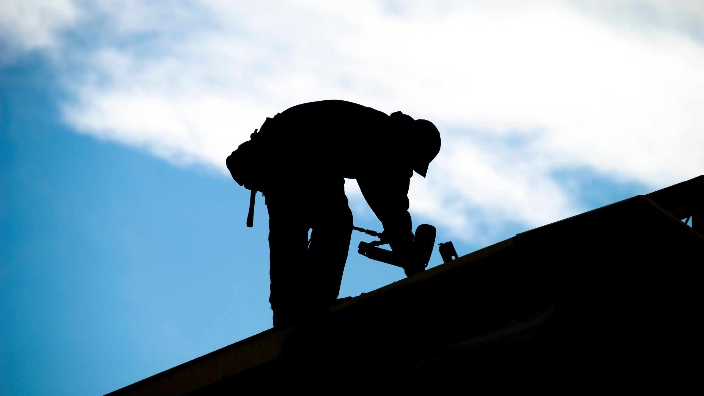

Réparation de fuite — Bois-le-Roi, Seine-et-Marne
Réparation de fuite de toiture à Bois-le-Roi.
Une fuite de toiture apparaît rarement à l’endroit où elle commence. Nous recherchons son origine réelle, mettons votre maison hors d’eau, puis réparons.

Ce que nous faisons
Une fuite de toiture, c’est d’abord un point d’entrée à retrouver.
Une fuite de toiture est une infiltration d’eau qui traverse la couverture et atteint la charpente ou le plafond. L’eau circule souvent plusieurs mètres sous les tuiles avant d’apparaître : la tache au plafond indique rarement le point d’entrée. Jeanmaire Couverture, entreprise de couverture installée à Bois-le-Roi depuis plus de 15 ans, remonte jusqu’à l’origine réelle, assure la mise hors d’eau, puis répare. Nous assurons un service d’urgence 7 j/7 pour le bâchage et les réparations faisant suite à une tempête ou à un sinistre. Tous nos travaux de couverture sont couverts par une assurance décennale.
Tuile cassée, fendue ou déplacée
Le cas le plus courant. Une seule tuile fendue par le gel, ou déplacée par un coup de vent, suffit à laisser passer l’eau jusqu’à la charpente. Traitée tôt, la réparation reste ponctuelle.
Solin dégradé en pied de cheminée
Le solin raccorde la couverture à un mur ou à une souche de cheminée. Son mortier se fissure sous l’effet du gel et des écarts de température : c’est une origine de fuite fréquente, et peu visible depuis le sol.
Fenêtre de toit qui prend l’eau
Sur une fenêtre de toit, l’eau passe rarement par le vitrage : elle passe par le joint durci ou par le raccord d’étanchéité mal recouvert. Voir notre page fenêtres de toit.
Faîtage ou arêtier descellé
Les tuiles faîtières scellées au mortier finissent par se desceller. L’eau s’infiltre par le haut du toit puis ruisselle sous la couverture, parfois loin de son point d’entrée.
Noue, chéneau ou gouttière débordante
Une noue encrassée ou une gouttière bouchée fait refluer l’eau sous les tuiles. C’est autant un travail de zinguerie que de couverture.
Mousses et écran sous-toiture vieilli
La mousse retient l’eau sur la tuile et la fait stagner. Quand l’écran sous-toiture est absent ou cassant, la seconde barrière manque. Un nettoyage de toiture régulier évite d’en arriver là.
Repérer l’origine
D’où vient l’eau ? Ce que chaque signe indique.
Ce tableau résume les origines les plus fréquentes rencontrées sur les toitures du Seine-et-Marne, le signe visible depuis l’intérieur ou la façade, et l’intervention correspondante.
| Origine | Ce que vous voyez | Intervention |
|---|---|---|
| Tuile cassée ou déplacée | Tache ronde au plafond, sous un point précis du toit | Remplacement de la tuile, contrôle des tuiles voisines |
| Solin de cheminée fissuré | Trace d’humidité le long du conduit, dans les combles | Dépose du mortier et reprise du solin |
| Fenêtre de toit | Goutte à goutte sur le pourtour du cadre, pas sur la vitre | Remplacement du joint ou du raccord d’étanchéité |
| Faîtage descellé | Humidité diffuse en haut de rampant, sur toute la longueur | Rescellement des faîtières |
| Noue ou gouttière | Ruissellement en façade, salpêtre au bas du mur | Nettoyage, reprise d’étanchéité ou remplacement |
| Écran sous-toiture vieilli | Plusieurs fuites éparses après une même pluie | Diagnostic complet : la réfection partielle devient parfois nécessaire |

Notre intervention
Mettre hors d’eau d’abord, réparer ensuite.
Face à une fuite active, la priorité est d’arrêter l’entrée d’eau. La réparation définitive vient dans un second temps, une fois l’origine identifiée avec certitude.
- Appel et premiers gestes à faire chez vous
- Bâchage et mise hors d’eau en urgence
- Recherche de l’origine, au besoin par drone
- Réparation et contrôle des points voisins
- Travaux couverts par l’assurance décennale
Nous ne sous-traitons pas : l’équipe qui diagnostique est celle qui réalise les travaux. Si l’inspection révèle une usure généralisée, nous vous le disons et chiffrons une réfection de couverture plutôt qu’une succession de réparations.
Décrire ma fuite« Tout s’est très bien passé. Rapidité et efficacité. »
Céline Atienza — Avis Google
Questions fréquentes sur les fuites de toiture
Que faire en urgence quand la toiture fuit ?
Coupez l’électricité de la pièce concernée, placez un récipient sous l’écoulement et percez le plafond s’il se boursoufle : cela évite qu’il s’effondre. Photographiez les dégâts pour votre assurance, puis appelez un couvreur. Ne montez pas sur le toit vous-même, a fortiori mouillé.
Intervenez-vous le week-end et les jours fériés ?
Nous sommes joignables du lundi au samedi, de 7h30 à 21h00, et le dimanche sur rendez-vous. Pour une fuite en cours, Jeanmaire Couverture assure un service d’urgence 7 j/7 pour le bâchage, la mise hors d’eau et les réparations faisant suite à une tempête ou à un sinistre. Appelez le 09 39 24 79 51.
Qu’est-ce qu’un solin, et pourquoi fuit-il si souvent ?
Un solin est la bande d’étanchéité qui raccorde la couverture à un élément vertical : mur, souche de cheminée, conduit. Réalisé au mortier, il se fissure sous l’effet du gel et des écarts de température. C’est l’une des origines de fuite les plus fréquentes, et l’une des moins visibles depuis le sol.
Peut-on réparer une fuite sans refaire toute la toiture ?
Oui, dans la grande majorité des cas. Une tuile cassée, un solin fissuré ou un joint de fenêtre de toit se traitent ponctuellement. La réfection complète ne s’impose que lorsque les fuites se multiplient à plusieurs endroits, signe que le support ou l’écran sous-toiture arrive en fin de vie.
Comment trouvez-vous l’origine exacte de la fuite ?
L’eau qui apparaît au plafond a souvent circulé plusieurs mètres sous la couverture. Nous partons du point visible, remontons dans les combles, puis inspectons la toiture. L’inspection par drone permet d’examiner les zones hautes sans échafaudage, avec un rapport photo et vidéo HD fourni sous 24 h.
Une fuite de toiture est-elle prise en charge par l’assurance ?
Cela dépend de votre contrat et de la cause. Les dommages causés à l’intérieur du logement relèvent en général de la garantie dégât des eaux, tandis que la réparation de la toiture elle-même est souvent considérée comme de l’entretien. Un événement climatique peut relever d’une garantie distincte. Vérifiez votre contrat, déclarez le sinistre dans les délais prévus ; nous fournissons le détail des travaux pour votre dossier.
Intervenez-vous en dehors de Bois-le-Roi ?
Oui. Notre équipe intervient dans un rayon de 30 km autour de Bois-le-Roi : Fontainebleau, Avon, Melun, Chartrettes, Vulaines-sur-Seine, Samois-sur-Seine, Champagne-sur-Seine, Héricy et Barbizon.
Vos réparations sont-elles garanties ?
Tous nos travaux de couverture sont couverts par une assurance décennale, et notre responsabilité civile professionnelle est à jour. L’attestation vous est fournie sur demande avant le chantier. Nous ne sous-traitons pas : l’équipe qui diagnostique est celle qui réalise les travaux.
Fuite en cours
Décrivez-nous votre fuite
Pour une fuite active, appelez le 09 39 24 79 51 — c’est plus rapide. Sinon, ce formulaire suffit : nous répondons sous 24 heures ouvrées.
Une fuite ne s’arrête pas toute seule à Bois-le-Roi.
Plus l’eau circule longtemps sous la couverture, plus elle atteint la charpente et l’isolant. Appelez-nous dès les premières traces.